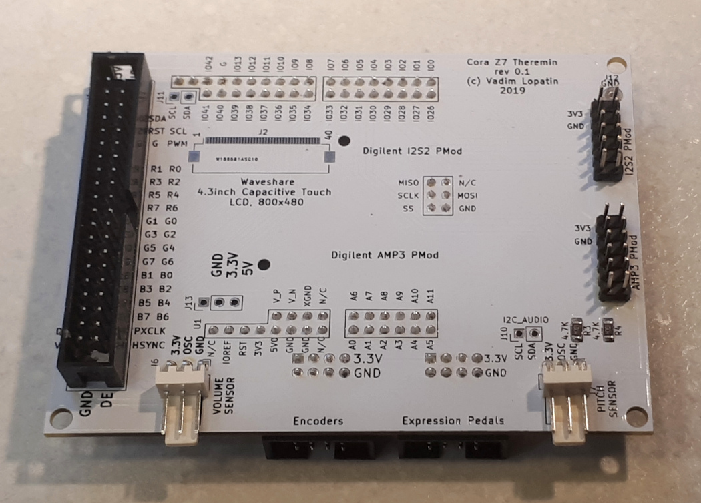
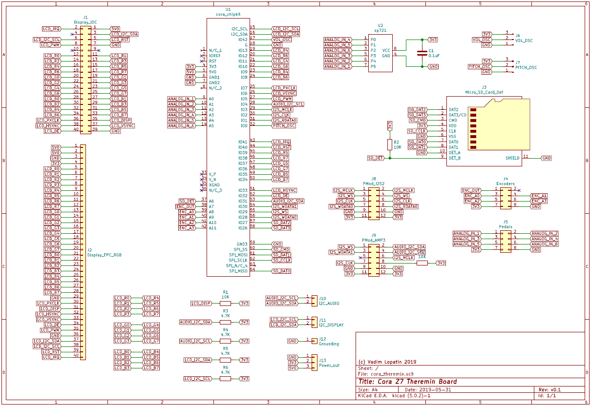

FPGA Based Theremin Project: : Cora Z7 Theremin Shield
This page describes design of theremin shield for Cora Z7

Connected to Cora Z7 board using Arduino/Chipkit connector.
Two on-board PMods of Cora board are left unused for future extensions.
Contains additional microSD card socket.
Used to connect other boards
- Theremin Pitch and Volume sensor oscillators
- TFT Touch Screen
- Encoders board
- Expression pedals board
- Audio I/O PMods: I2S2 and AMP3
Design
PMod adapters
PMod connectors for I2S2 and AMP3 PMods are made using custom pmod adapter boards - to place PMods above shield.

PCB design
Schematic and PCB are designed in KiCAD.
| Board | KiCAD Schematic | Gerber file |
|---|---|---|
| Cora Z7 Theremin Shield
Connected to Cora Z7 board using Arduino/Chipkit connector.  
|
 | 
|

FPGA part
TBD
...